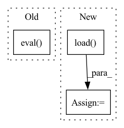

Pattern ID :40679

Before Change
if args.wandb:
wandb.log({"train/loss": loss.item()})
if (i+1) % args.sample_freq == 0:
model.eval()
dec = decoder.generate(torch.LongTensor([args.bos_token]*len(encoded[:args.test_samples]))[:, None].to(device), args.max_seq_len,
eos_token=args.pad_token, context=encoded.detach()[:args.test_samples])
pred = token2str(dec[:args.test_samples], dataloader.tokenizer)
truth = token2str(seq["input_ids"], dataloader.tokenizer)
After Change
def train(args):
dataloader = Im2LatexDataset().load(args.data)
dataloader.update(**args)
valdataloader = Im2LatexDataset().load(args.valdata)
valargs = args.copy()
valargs.update(batchsize=args.testbatchsize, keep_smaller_batches=True)
valdataloader.update(**valargs)
device = args.device
In pattern: SUPERPATTERN
Frequency: 4
Non-data size: 3
Instances
Fragment ID: 114959706
Project Name: lukas-blecher/latex-ocr
Commit Name: d52e43388fd9c01f33b5e03bcccbba0a0c8e51b5
Time: 2021-02-15
Author: luk.blecher@gmx.de
File Name: train.py
M Class Name: AnonimousClass
N Class Name: AnonimousClass
M Method Name: train(1)
N Method Name: train(1)
M Parent Class:
N Parent Class:
M File Name: train.py
N File Name: train.py
M Start Line: 21
M End Line: 61
N Start Line: 24
N End Line: 54
'>
Before Change
full_path = cache_path
if ext == "pt":
model = torch.load(full_path).eval()
elif ext == "h5":
model = tf.keras.models.load_model(full_path)
else:
raise NotImplementedError("Extension not supported:", ext)
After Change
if ext == "pt":
device = "cuda" if torch.cuda.is_available() else "cpu"
model = torch.jit.load(
full_path,
map_location=device,
)
model = model.eval()
elif ext == "h5":
model = tf.keras.models.load_model(full_path)
else:
'>
Fragment ID: 114959704
Project Name: indyfree/carla
Commit Name: fae929c0e52917dbaaadcbf909801a5eb505114e
Time: 2021-05-06
Author: sbielawski@web.de
File Name: carla/models/catalog/load_model.py
M Class Name: AnonimousClass
N Class Name: AnonimousClass
M Method Name: load_model(5)
N Method Name: load_model(5)
M Parent Class:
N Parent Class:
M File Name: carla/models/catalog/load_model.py
N File Name: carla/models/catalog/load_model.py
M Start Line: 38
M End Line: 61
N Start Line: 38
N End Line: 66
'>
Before Change
dropout=0.2).to(self.device)
model.load_state_dict(torch.load(self.bestModelPath))
model.eval()
return model
def __call__(self, images):
After Change
network = self.network
network.load_state_dict(torch.load(self.path))
else:
network = torch.jit.load(self.path)
network = network.to(device) if device else network
network.eval()
return network
'>
Fragment ID: 114959703
Project Name: project-monai/monailabel
Commit Name: 287d4c1eafd3ab1e364e89a4bf9f6e650c68ac77
Time: 2021-04-29
Author: salle@nvidia.com
File Name: sample-apps/segmentation_heart/lib/activelearning.py
M Class Name: MyActiveLearning
N Class Name: MyActiveLearning
M Method Name: get_model(2)
N Method Name: get_model(1)
M Parent Class: ActiveLearning
N Parent Class:
M File Name: sample-apps/segmentation_heart/lib/activelearning.py
N File Name: sample-apps/segmentation_heart/lib/activelearning.py
M Start Line: 40
M End Line: 53
N Start Line: 63
N End Line: 75